/math-07ab8bd2ced78ca04d507625c0c5c584.png "K\,\!") サンプルサイズ
サンプルサイズ 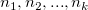
を持つ次のように表される2つ以上の独立した標本間の差を調べるものです。
以下の説明は、NAGのアルゴリズムから引用したものです。
メディアン検定は、 サンプルサイズ
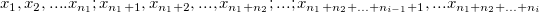
メディアンの値はユーザが与えるのではなく、すべてのグループを組み合わせたデータが保存され、そこからメディアンが次式を使って計算されます。
nが偶数の場合、 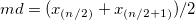 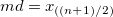
ここで 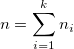 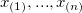
検定は、プールドサンプルのメディアンの上下にいける各標本の度数表を作成します。
| 標本1 | 標本2 | …… | 標本K | 合計 | |
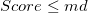 |
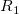 |
||||
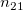 |
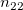 |
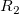 |
|||
| 合計 | /math-7ae76161358672724be28c2a08a628ab.png "n_{1}\,\!") |
/math-c133b543b65a4bc86c423aea7e6eb74a.png "n_{2}\,\!") |
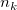 |
/math-baa52b85c066dbd5eeff3c078a69205b.png "n\,\!") |
すべての非空の標本に対する 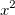
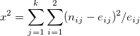 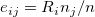
有意水準は、 分布(自由度 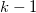